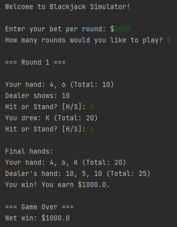

Projects
Blackjack Game (Python)
Built a terminal-based Blackjack game in Python. Focused on logic, game flow control, and player input. Improved error handling and game loop design.
 View on GitHubWordle Clone (Python)
Developed a Wordle-style game using Python to deepen understanding of string manipulation, data validation, and game state tracking. Built all logic from scratch.
View on GitHubSkills
- Languages: Python, C++, HTML, CSS, JavaScript (basic), SQL (learning)
- Tools: GitHub, Visual Studio Code, SketchUp, Microsoft Excel/Word/PowerPoint
- Soft Skills: Communication, Teamwork, Problem-solving, Adaptability, Time Management
About Me
I'm Cameron Arruda, a CS student at the University of Rhode Island with a foundation in problem-solving and a current drive for software development. I have been learning programming through simple projects that interest me.
My experience in retail has sharpened my communication, problem-solving, and ability to adapt under pressure, these skills directly support how I approach programming challenges.
I’m currently focused on Python and C++, learning SQL, and exploring the web development space with HTML and JavaScript.